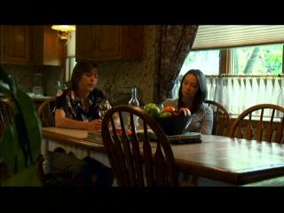
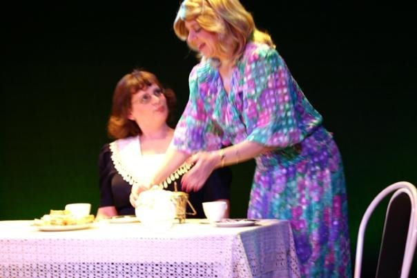
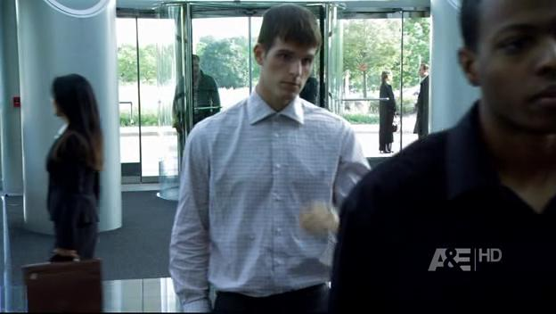
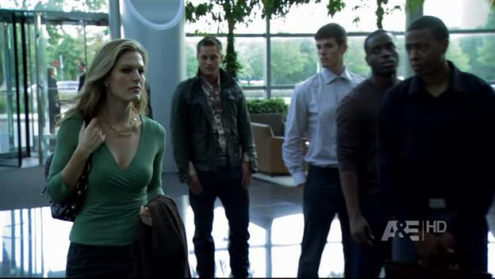
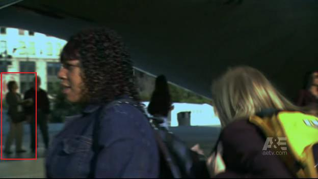
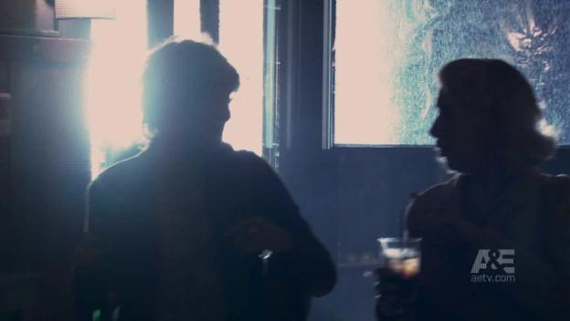

Miss Ohio Wins Big in Hollywood!
Greetings Fans! As blogged last month, Miss Ohio was screened at the Dances With Films festival in Hollywood earlier this month. I am pleased to report that Miss Ohio was awarded top honors in the Features category, the…

Miss Ohio Goes to LA
Hello Fans! I know, it has been weeks since we had any news. After doing two plays back-to-back, Carol has been taking it easy and relaxing, and news has been slow. Aside from working for Kaplan Medical as a…

Who's the hot blonde?
Marla Gusler (as Minnie Swisher) and Carol (as Sissy Brockman) Tales From Darkest Suburbia at Riverfront Playhouse is half-way through its run. If you have not seen the show yet, you only have until April 25th (but…

Tales From Darkest Suburbia
Greetings Fans! Having just finished Key For Two at the Riverfront Playhouse, Carol is once again back in Aurora, appearing in their next production, Tales From Darkest Suburbia, by Edward Crosby Wells. This show is...…
The Vision World Premiere
It has been a busy week for Carol, with the screening of Miss Ohio earlier this week, and the World Premiere of The Vision on Friday the 13th at the historic Rialto Square Theatre in Joliet, IL! The Vision is an…
Miss Ohio Screening
Greetings Fans! As reported here back in August last year, Carol had a part in an independent film called Miss Ohio. We went to the screening last night at Northwestern, hosted by Studio 22, and it was excellent! "After…

A New Record!
Greetings Fans! As reported last week, Carol (and I) made our last appearance in The Beast last Thursday night. After reviewing the scene even more closely, we found three more shots with Carol visible! This brings the…

Final Appearances on The Beast
Yesterdays episode of The Beast on A&E marked the final appearance of Carol (and me!) on this series. First, when Travis goes undercover to apply for a job at Emerson Security, Carol can be seen standing outside the…

Contemplating The Bean
Greetings Fans! Carol's TV appearances continue as she could be seen once again in The Beast. In the beginning of episode 4, Carol can be seen contemplating The Bean (or Cloud Gate, if you prefer), as the woman with a…

Carol's Return to TV
Greetings Fans, As I reported back in August, Carol had worked background on several episodes of The Beast, the new A&E drama starring Patrick Swayze. The Beast airs on Thursday nights at 9pm on A&E, and last Thursday…